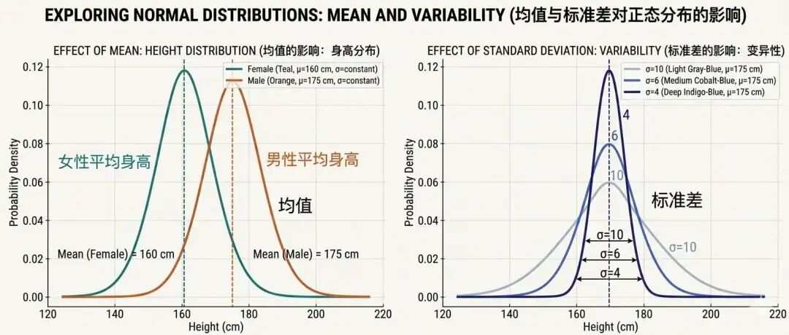
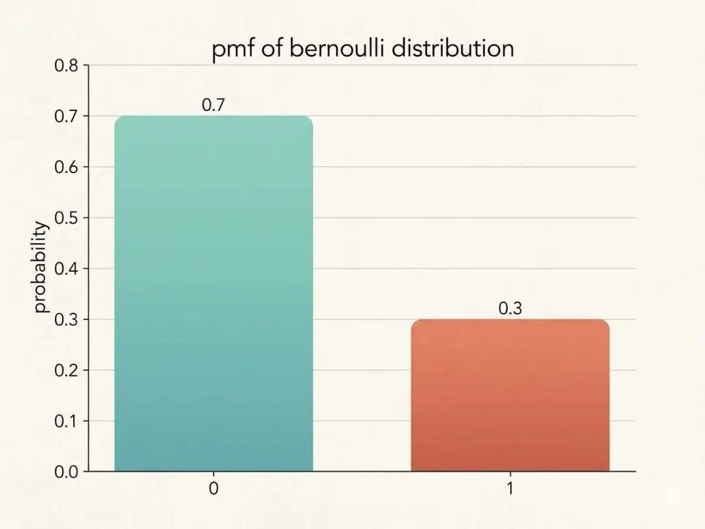
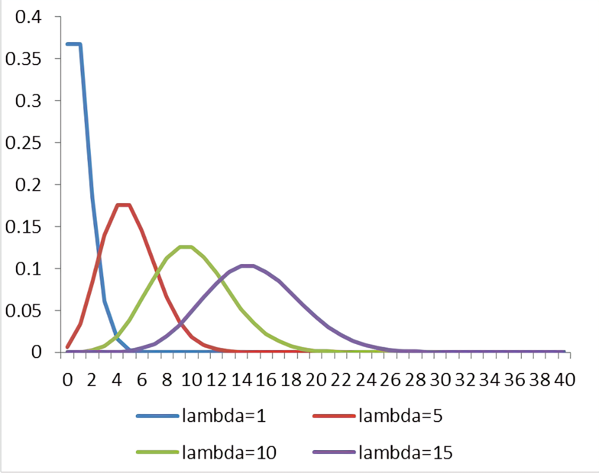
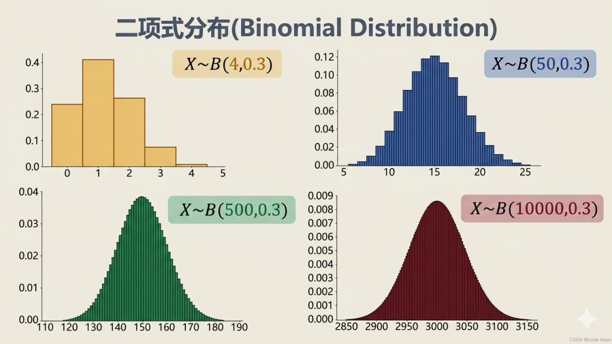
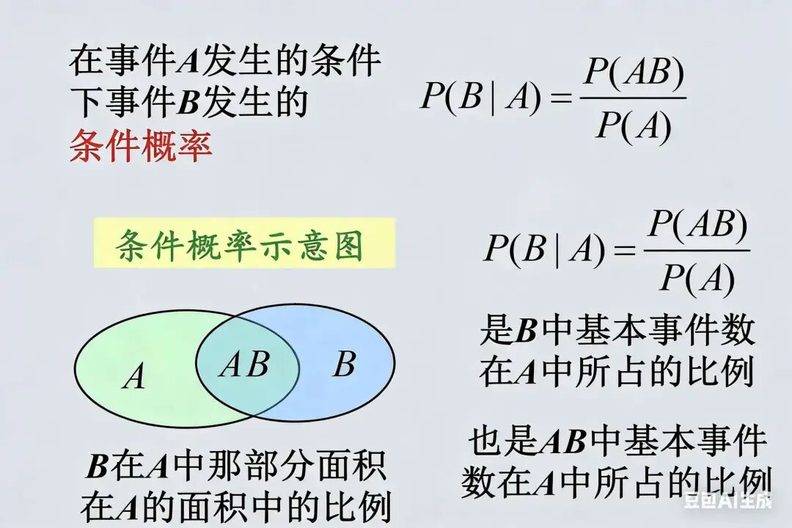
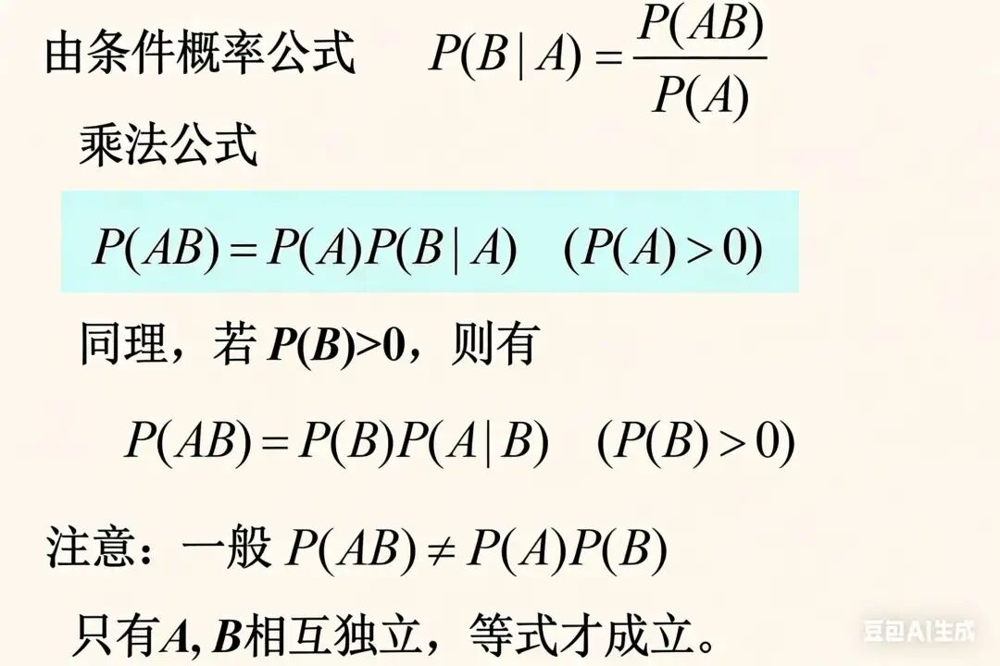
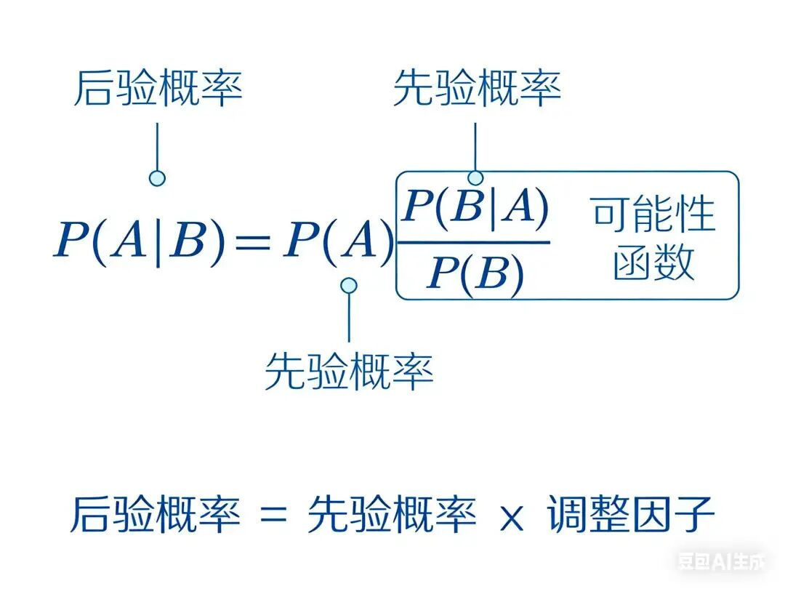

"上帝不掷骰子"--爱因斯坦
在通往通用人工智能（AGI）的道路上，科学家通过建立"向量空间"来判断事物与事物之间的相似度，从而为可分类打下了基础。
但是有一类事物是没有明显"分界线"的，它们无法直接分类，比如股票的价格、人的身高、学生的成绩。它无法直接通过计算"距离"或者相似性来进行区分。
它们可能为任意数，单从连续区间（比如［-1,1］）包含的无限种可能性来看，连续型事物的"不确定性"太高了，比如股票的价格是无穷多的，人类的身高也是无穷的。
如果要让AI来完成这种任务的精准预测非常困难，这类事物充满着不确定性，因为现实系统过于复杂，我们无法完整观测所有影响因素，也无法建立完全精确的模型。因此，概率就成为描述这种不确定性的自然工具。
经典物理学，尤其是牛顿力学，在宏观世界描绘了一个确定性的世界，只要给出某一时刻物体所在的位置和运动的速度，理论上通过牛顿第一第二定律，就能够预测物体未来任何时刻的状态。
但是在微观世界，著名双缝干涉实验证明物体在未观测之前，具体表现出来的状态是概率性的，你永远无法提前100%确定物体状态，因为"观测"行为本身会干扰测量结果。
因此预测是困难的，但是上帝不掷骰子，看似杂乱无章的宇宙，实则背后暗藏着一般性规律。
那有没有什么数学工具可以描述这种看似存在高度随机性，却存在一般性规律的事物呢？
这就是接下来我们要讲解的数学工具--概率分布，概率表示的是一件事情发生的可能性大小，其取值范围为[0,1]，0至1之间的数值连续且无穷多。概率越接近 0，表示事件越不容易发生；越接近 1，表示事件越容易发生。
在有限离散情形下，概率为 0 常表示不可能事件，概率为 1 常表示必然事件。以下是我们在机器学习中经常使用到的概率分布。
回想我们高中课堂所学习的概率知识，我们最早接触到的概率模型应该是下面这种类似于钟形的曲线：

$$ f(x) = (1 / (σ√(2π))) * e^{-(1/2)((x-μ)/σ)^2} $$钟形曲线也叫"正态分布"，还叫做"高斯分布"，正态分布是自然界广泛存在的一种概率模型，在机器学习与深度学习中被广泛应用。它的对称轴位置由均值决定，如左图；而它的开口大小和形状由标准差决定，如右图。
还记得我们高中课堂提到的抛硬币实验吗？一枚硬币抛后的结果要么是正面要么是反面，描述只有两种互斥结果的单次随机实验就是伯努利实验，其概率分布称之为伯努利分布。
$$ P(X = k) = p^k * (1-p)^(1-k) $$
另一种分布是泊松分布，泊松分布也是生活中一种很常见的分布，它描述的是一个低概率的罕见事件发生的概率分布情况，举几个例子：
一个公交站台在10分钟内到来的乘客数量。
一家奶茶店在下午茶高峰时段（如2pm-4pm）接到的外卖订单数量。
你在一个小时内收到微信消息/短信/邮件/App推送的数量。
$$ P(X = k) = (λ^k * e^{-λ}) / k! $$当你遇到一个场景，你想回答 "在一段固定时间或空间内，某某事件发生了多少次？" 并且满足下面的条件：
（1）事件是 独立 发生的，和其他事件不存在相互"干扰"。
（2）事件发生的概率 很低 ，是"稀有"或"偶然"事件。
（3）你知道这段时间内事件发生的平均次数λ。
那么，你遇到的现象大概率就可以用 泊松分布 来描述。看下面的这个λ取不同值时的分布图，横轴表示的是事件实际发生的次数，纵轴表示的是事件恰好发生k次的概率p（p是泊松分布公式计算得到的）。

仔细观察的同学可能已经发现，泊松分布看着也有点像"钟形曲线"，为何会是这样？后面我们将会进行解释。
二项式分布是伯努利实验的N次重复，重复N次后，"成功"次数k的概率分布。其实泊松分布也是二项式分布的一种极限情况，二项式分布与伯努利分布和泊松分布有着密切的关系：伯努利分布是二项式分布在 n=1 时的特例，而泊松分布是二项式分布在 n->∞、p->0 时的极限情况。我们先看二项式分布的公式表达：
$$ P(X = k) = C(n, k) * p^k * (1-p)^(n-k) $$注释版：
$$ \underbrace{P(X = k)}_{\text{二项分布：}n\text{次试验恰好成功}k\text{次的概率}} = \underbrace{\mathrm{C}_n^k}_{\text{组合数：从}n\text{次中选}k\text{次成功}} \cdot \underbrace{p^k}_{\text{单次成功概率}p\text{，连续}k\text{次}} \cdot \underbrace{(1-p)^{n-k}}_{\text{单次失败概率}1-p\text{，连续}n-k\text{次}} $$$C(n, k)$ 是二项式系数，不就是高中的排列组合知识中提到的公式吗？这也是二项式分布得名的由来，表示从 n次试验中选出 k次成功的所有组合方式。
再看下面这幅图，随着n和p的变化，分布形状的变化，n越大，越像钟形曲线，越接近于正态分布：

X ~ B(n, p)符号的解释：其中X 代表是一个变量，随机变量，意味着它的值在实验前是不确定的，取决于随机。
- ~ 这个符号读作"服从...分布"或"服从...分布律"。
- B是Binomial distribution，直译为二项分布的缩写。
- n代表总的独立重复试验的次数。
- p代表在每一次单独的试验中，"成功"发生的概率。
注意这里不要混淆，虽然n都是趋近于∞，二项式分布既能趋近于泊松分布，也能趋近于正态分布，但趋近于泊松分布的前提是p要趋近于0，也就是泊松分布代表的是罕见事件的概率分布；
趋近于正态分布的前提是p恒定不变，比如不断进行投掷硬币的实验，最终结果为正面事件的概率恒定为0.5。
从以上的几种分布可以看出来，无论是伯努利分布，泊松分布，还是二项式分布，或者其他的任何分布，只要样本量 n足够大，样本均值的抽样分布就会开始近似服从正态分布。
想象你有一颗质地并不均匀的骰子，接近数字4的那一面质量密度更高，会经常掷出4，但是假如做无穷个实验，每个实验掷骰子100次，并且统计每次实验的平均点数。只要实验次数足够的多，这些个平均点数最终会构成一个完美的钟形曲线。
这就是中心极限定理的核心原理，不论样本中原始数据的分布是什么样子，只要实验的次数足够多的多，所有样本的平均值的分布情况都是正态分布。
中心极限定理是隐藏在所有分布关系背后的根本性规律，它解释了为什么正态分布会从各种不同的分布中涌现出来。
它赋予了样本均值巨大的力量。即使我们面对一个完全未知、形态各异的总体，我们也能利用样本均值的正态性，来对总体均值进行估计、预测和假设检验。这就是现代统计推断的基石，这也是为什么概率统计学能够成为AI算法的重要基石的原因之一。
我们通过下表看看以上的各种概率分布在AI算法中到底发挥了怎样的作用，从而明白统计学在机器学习和深度学习中的地位为何如此重要。
| 概念名称 | 核心思想与AI的关系 | 为什么AI需要它？ | 典型AI应用场景（生活化举例） |
|---|---|---|---|
| 伯努利分布 | 描述 单次 试验只有 两种结果 的概率分布。 | 为 二分类问题 提供数学基础，让AI能输出"是"或"否"的概率。 | 垃圾邮件过滤 ：判断一封邮件是"垃圾邮件"(1)还是"非垃圾邮件"(0)。模型输出的概率可以看作是伯努利分布的参数p。 |
| 二项分布 | 描述 n次独立 伯努利试验中 成功次数 的分布。 | 对 重复性独立事件 的总体结果进行建模，评估 累计效应 。 | 质量抽检 ：从生产线上抽取100件产品，每件产品"合格"的概率相同且独立。二项分布可描述这100件产品中合格品总数的概率分布。 |
| 泊松分布 | 描述在 固定时间或空间 内， 稀有事件 发生 次数 的概率分布。 | 对 随机事件发生的频率 进行建模，尤其适用于 计数型 数据。 | 客服中心来电预测 ：中午12点到13点，平均每分钟接到5个电话（λ=5）。泊松分布可以预测下一分钟接到k个电话的概率，用于合理安排客服人员。 |
| 正态分布 | 描述大量 随机因素 共同作用下，变量呈现的 钟形 分布规律。 | 自然界和AI中许多 随机误差或特征 都近似服从正态分布，是许多算法的 基本假设 。 | 测量误差建模：在回归任务中，模型预测值与真实值之间的误差常常近似看作服从正态分布，因此很多损失函数和统计方法都与正态分布密切相关。 |
| 中心极限定理 | 无论原始分布如何，大量 独立随机变量 的 平均值 的分布会趋近于正态分布。 | 为AI的 统计推断 提供理论保障，使我们可以用正态分布的性质来 评估模型的不确定性 。 | A/B测试评估 ：比较A、B两个网页设计的点击率。即使单次点击行为不服从正态分布，当样本量足够大时，平均点击率的分布近似正态，从而可以计算置信区间（如"有95%的把握认为B方案更好"）。 |
以上是重要的概率分布与AI内在关系的介绍，接下来我们将朴素的讲解我们在学习AI过程中需要掌握的概率统计学的基础知识。
期望描述的随机变量（骰子的点数）在大量重复实验中的平均取值，它的核心作用是用于描述多次重复实验的长期平均趋势。
比如投掷一枚质地均匀的骰子，随机变量X的期望是 (1×1/6)+(2×1/6)+...+(6×1/6) = 3.5，即反复不断掷骰子的平均点数接近3.5。
方差用于描述随机变量（骰子的点数）偏离平均值的程度有多大，它可以衡量数据波动的剧烈程度，方差越小代表数据越集中在平均值附近，方差越大代表数据越分散，波动越剧烈。
方差的计算公式为 $\mathrm{Var}(X) = \mathrm{E}[(X - \mathrm{E}(X))^2$ ]，即每个可能取值与期望值之差的平方的加权平均（权重为概率）。
概率的正式定义指的是：用于度量随机事件发生的可能性，其值介于0到1之间的实数。根据古典概率学定义记作：
$$ P(A)=m/n $$以投骰子为例，其中事件A为投骰子后点数为偶数事件，m则为事件A包含的结果数量，一枚骰子偶数有2，4，6，所以m=3；n为投骰子后所有可能的结果数，一枚骰子总共有1，2，3，4，5，6，所以n=6。
条件概率顾名思义，是有条件的发生，这个条件就是在事件B发生的前提下，事件A发生的概率，记作：P(A|B)。

概率论中的乘法公式主要用于解决多个事件之间存在关联，不独立的情况下同时发生的概率，由条件概率可以推导：
$$ P(AB)=P(A∣B) P(B)=P(B∣A)P(A) $$
什么是先验概率，顾名思义，就是在事件发生之前，根据生活经验或者常识，又或者是历史数据对于事件发生可能性的估计。
比如夏天下雪的概率极小，雨季一般在春天，父母是高个子，其后代是高个子的概率大。这些都是根据生活常识得到的先验概率。
又以垃圾邮件过滤为例，在收到一封邮件后，根据历史数据统计，约有25%数量的邮件为垃圾邮件，这个25%就是先验概率。
什么是后验概率，顾名思义，就是在事件发生之后，通过观察到某些新数据或者证据的情况下，反推某事件存在的概率大小。
还是以垃圾邮件过滤为例：我们已经收到一封邮件，并观察到里面多次出现"免费"这类关键词，在此前提下，判断这封邮件是垃圾邮件的概率为 99%，这个 99% 就是后验概率。

关于似然概率的解释，网上有个很形象的比喻，想象一个破案的场景，概率就是预测嫌犯会做什么，而似然就是根据已经发生过的现场证据和相关结果反推哪个嫌犯的嫌疑是最大的。
回到邮件的场景，似然概率衡量的就是：如果确定一封邮件是垃圾邮件，那么它里面包含某个"关键词汇"的可能性有多大，比如包含"免费"、"优惠"、"开通"这些词的可能性有多大。
先验概率、后验概率、似然概率，这三者之间存在一个关系：
这三者之间的关系就是贝叶斯公式：后验概率 ∝ 先验概率 × 似然概率，其中 ∝ 表示"正比于"。关于贝叶斯公式我们在后续讲解朴素贝叶斯将会有更加详细的介绍和解释，这里我们只需要掌握其核心思想即可。
以上就是我们在学习AI算法过程中需要掌握的基础的概率统计学知识了。
正态分布：正态分布是呈对称钟形的连续概率分布，多数自然现象、测量误差都趋近于它。它是机器学习中描述噪声、数据分布与统计推断的最核心分布。
泊松分布：泊松分布用于描述固定时间或空间内，随机事件发生次数的离散概率。常用来建模单位时段内的请求数、故障数、点击量等计数型稀有事件。
伯努利分布：伯努利分布是只做一次试验、结果只有0或1两种情况的最简单离散分布。对应机器学习里单次二分类问题，是所有二分类概率模型的基础。
二项式分布：二项分布是n次独立重复伯努利试验中，成功总次数对应的离散分布。用来描述多次独立二分类实验下，某类结果出现固定次数的概率。
中心极限定理：大量独立同分布随机变量的均值，最终会近似服从正态分布，与原分布无关。它让我们能用正态分布近似复杂总体，是统计推断与模型误差分析的理论基础。
期望：期望是随机变量按概率加权的平均值，代表随机结果的整体中心水平。在机器学习中用来表示平均收益、平均误差或模型的预期表现。
方差：方差衡量随机变量偏离期望的波动与分散程度，数值越大越不稳定。用于刻画数据不确定性、模型预测鲁棒性，也是正则化和误差分析的关键指标。
条件概率：条件概率是在某一事件已经发生的前提下，另一事件发生的概率。它描述事件之间的依赖关系，是所有概率推理和链式规则的基础。
先验概率：先验概率是在没有看到新观测数据前，凭经验或背景给出的初始概率。作为贝叶斯推理的起点，代表我们对参数或事件的初始认知。
后验概率：后验概率是在观测到新数据后，结合先验修正得到的更新后概率。它是贝叶斯学习最终要得到的结果，更贴近真实情况的概率判断。
似然概率：似然概率固定观测数据，反推不同参数能产生该数据的可能性大小。它不直接表示参数概率，只衡量当前参数对观测数据的解释程度。
贝叶斯定理：贝叶斯定理用先验概率和似然概率，系统计算出后验概率的核心公式。它是贝叶斯分类、参数估计、概率建模的根本公式，实现知识与数据的融合。